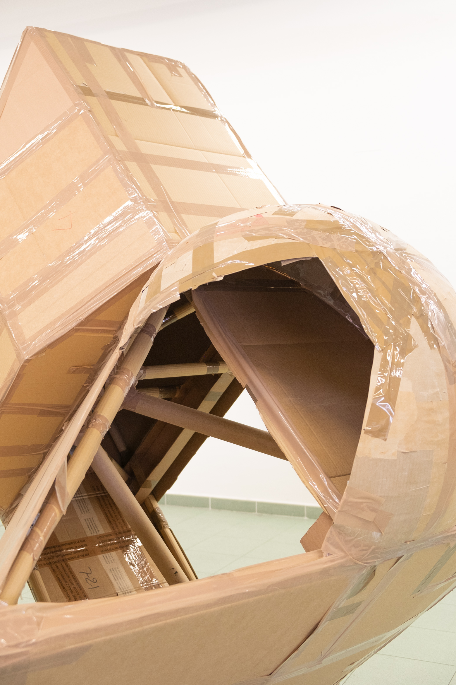
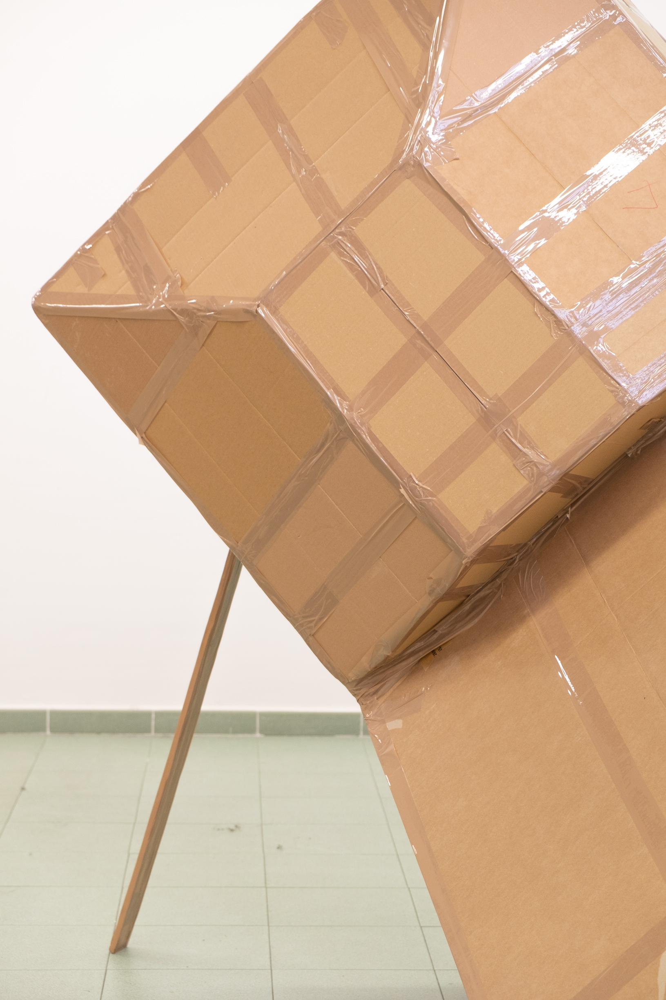
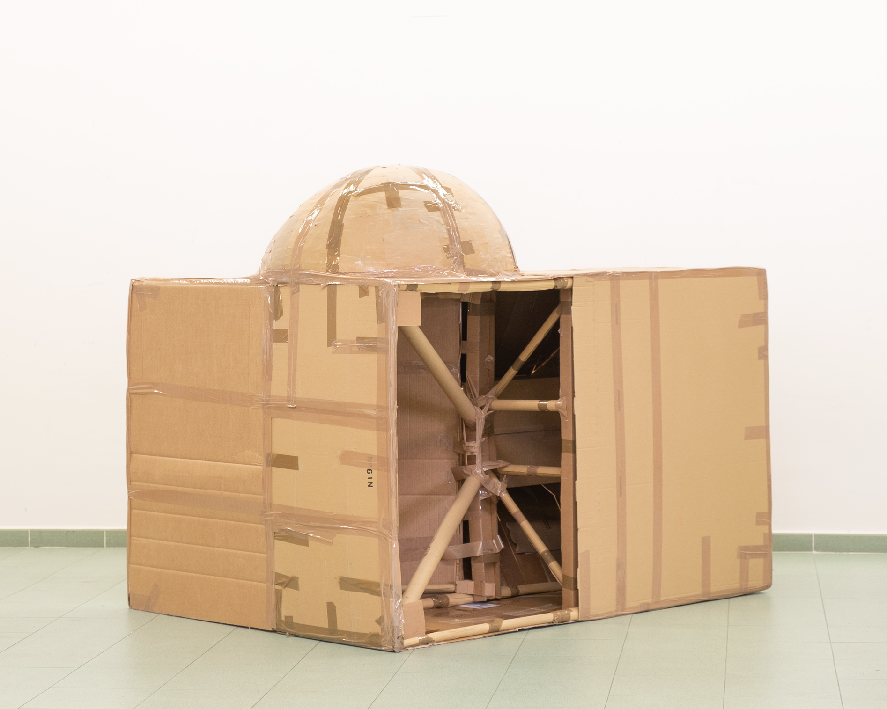

Caja para
una escultura
Cuenca, 2022.
(200,150,170cm)
Empezar por lo último. Envolver la nada con papel, y luego ir a comprar el regalo. Esto es "Caja para una escultura", construir una caja para un volumen que nunca existirá, nunca se transportará a ningún sitio. Su interior siempre esperará a ser ocupado, por que es para lo que se hizo, como el resto de cajas, que esperan sus correspondientes mudanzas.


